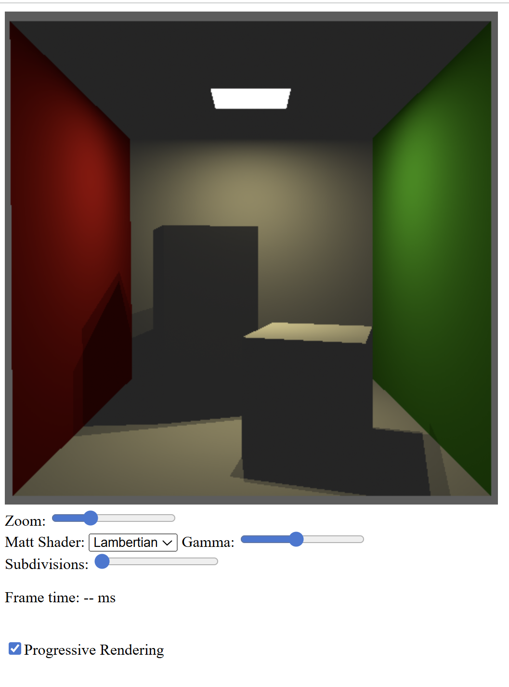
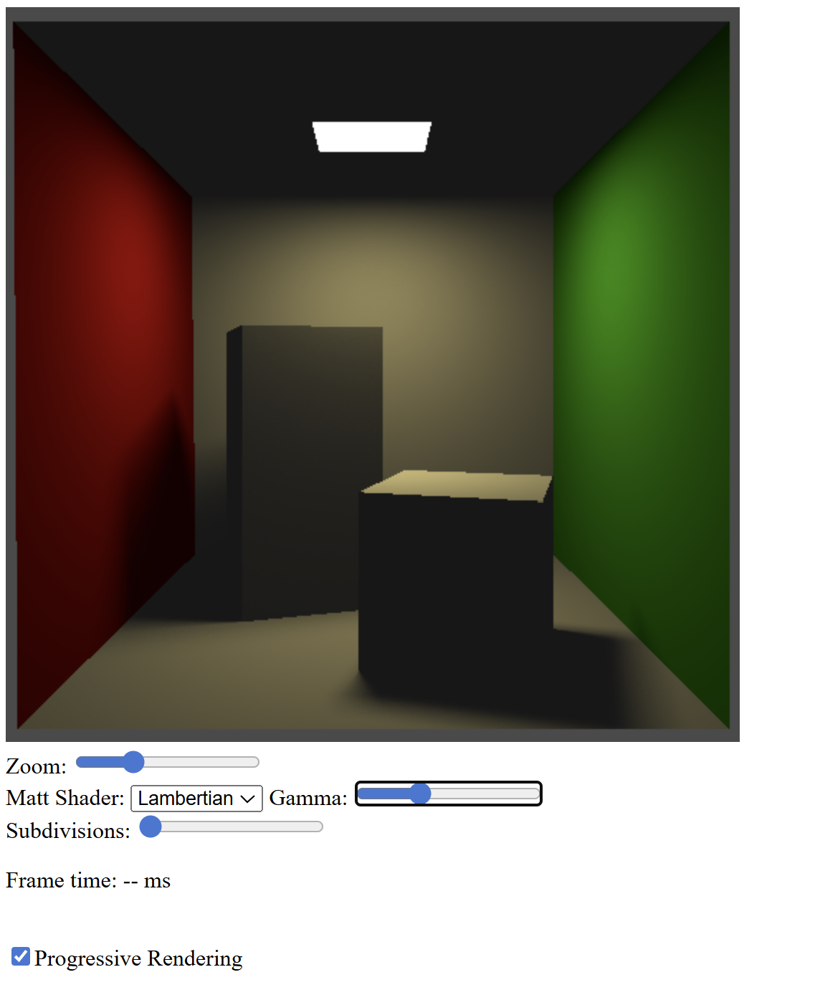
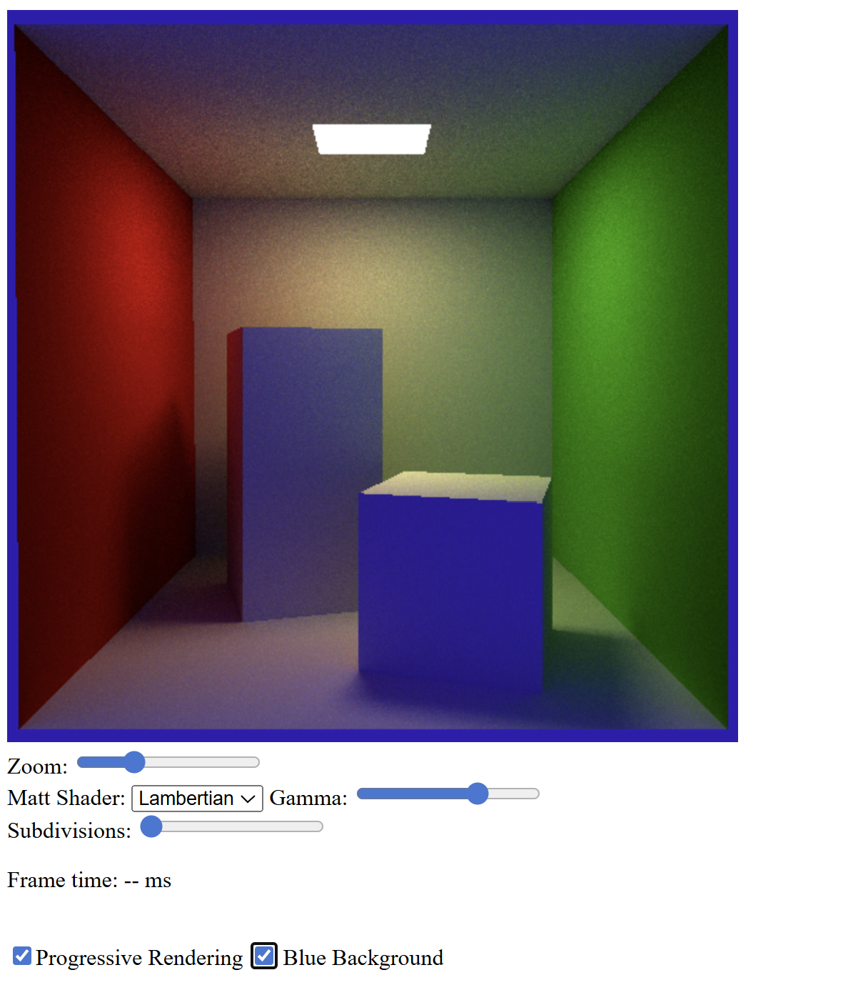

Exercise 1 — Progressive rendering and ping-pong textures
Compared to the previous worksheets, I introduced a progressive rendering scheme using two textures in a ping-pong configuration. One texture is used as a render target while the other stores the accumulated result from the previous frame.
At each frame, the shader reads the previous image, adds a new randomly jittered sample, and stores the running average of all samples. The frame index and the canvas resolution are passed as uniforms and used to seed a pseudo-random number generator on the GPU.
A checkbox allows enabling or disabling progressive updating. When progressive mode is active, the image gradually converges and anti-aliased edges appear without recomputing everything from scratch.
Source code: GitHub – Worksheet 7 / Exercise 1
Exercise 2 — Monte Carlo area light sampling
In this exercise, I replaced the simplified area light sampling with Monte Carlo sampling of the actual geometry of the light source.
A pointer to the random seed is passed through the shading functions, allowing the area light to sample a random triangle and a random point on that triangle. This produces spatially varying illumination across the scene.
As a result, the Cornell box blocks cast soft shadows instead of hard shadow boundaries, which is characteristic of extended light sources.
Source code: GitHub – Worksheet 7 / Exercise 2
Exercise 3 — Indirect illumination with path tracing
Finally, I extended the HitInfo structure with an emit flag and a throughput factor to support indirect illumination. The throughput accumulates the contribution of each bounce along the path.
I implemented cosine-weighted hemisphere sampling for Lambertian surfaces and recursively traced secondary rays to estimate indirect lighting using Monte Carlo integration.
This allows light to bounce between surfaces, producing realistic color bleeding inside the Cornell box. A toggle is provided to switch between a blue and a black background, and the frame counter is reset whenever the scene configuration changes.
Source code: GitHub – Worksheet 7 / Exercise 3